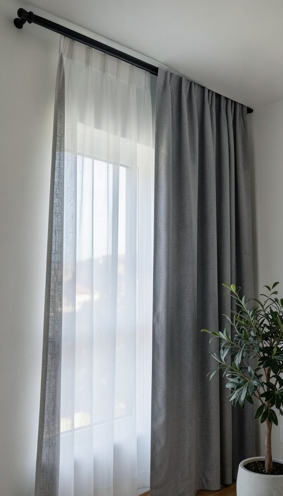
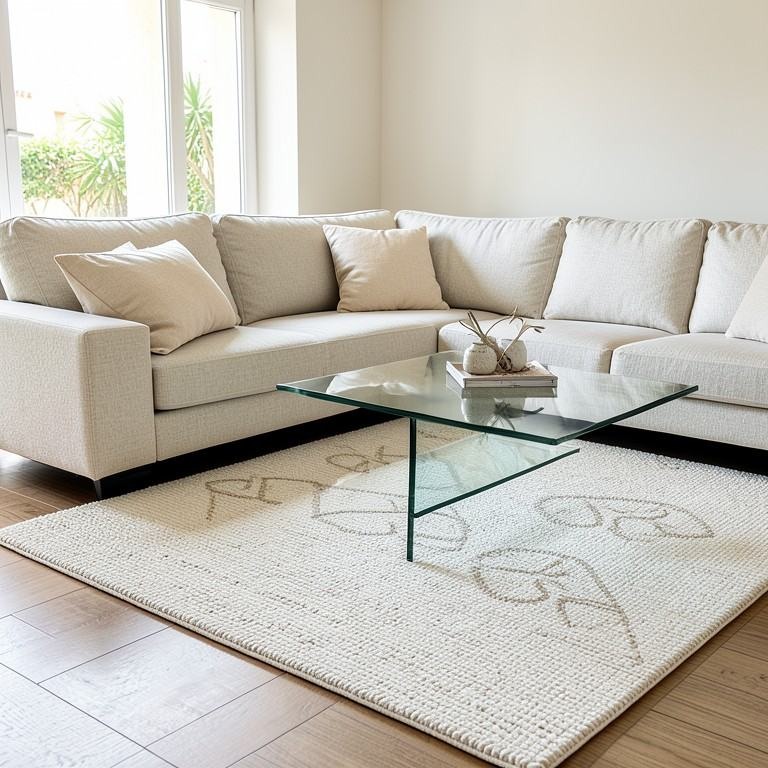
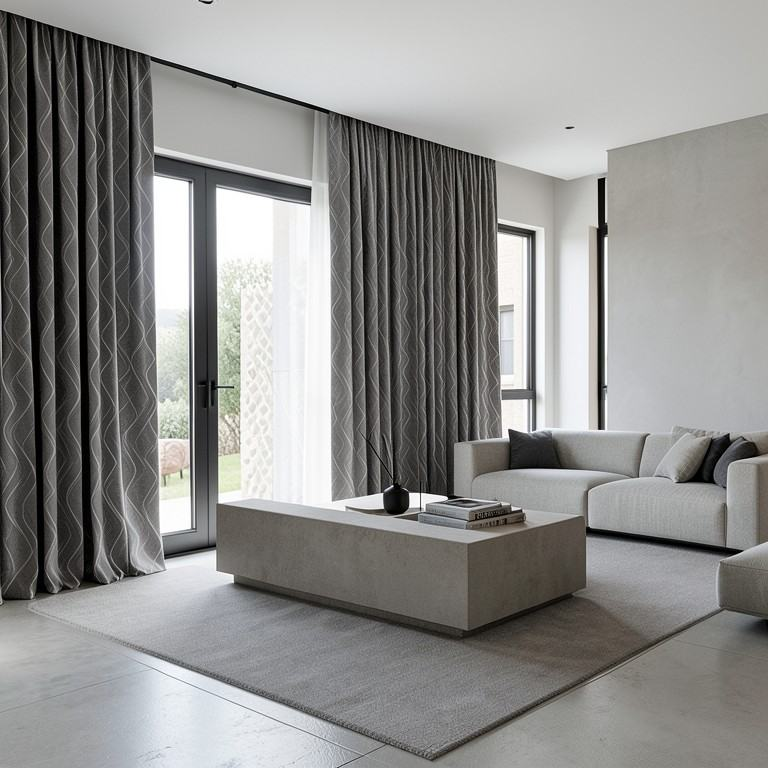
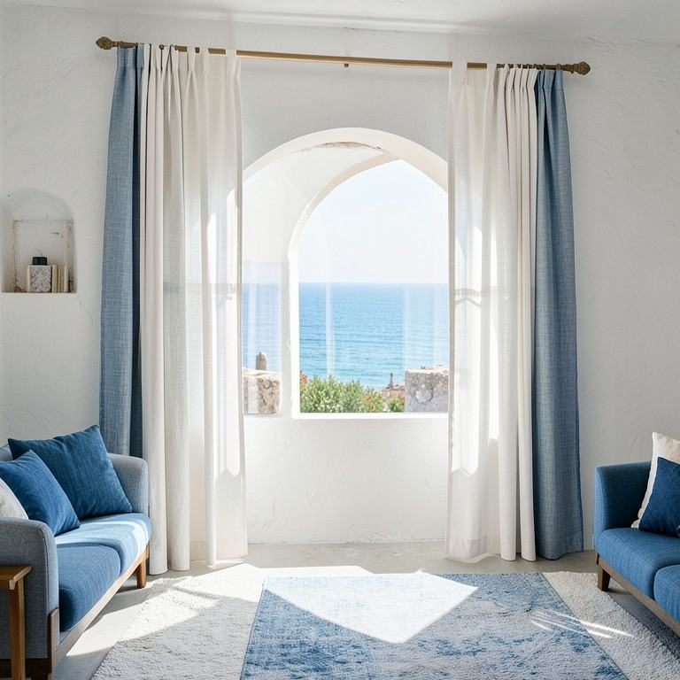
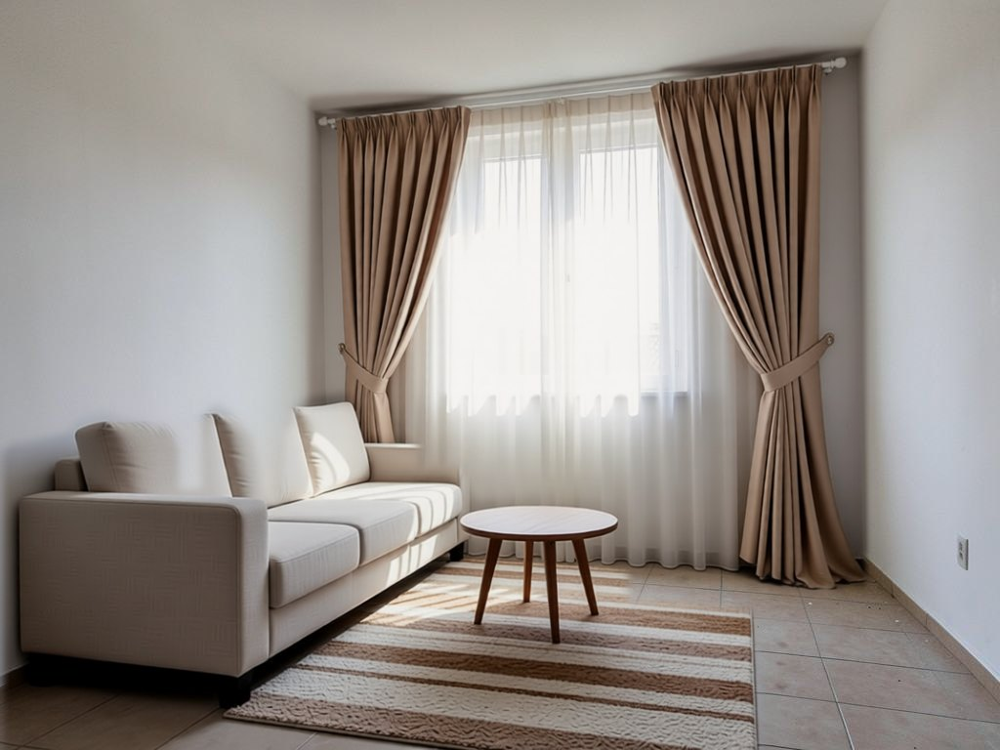
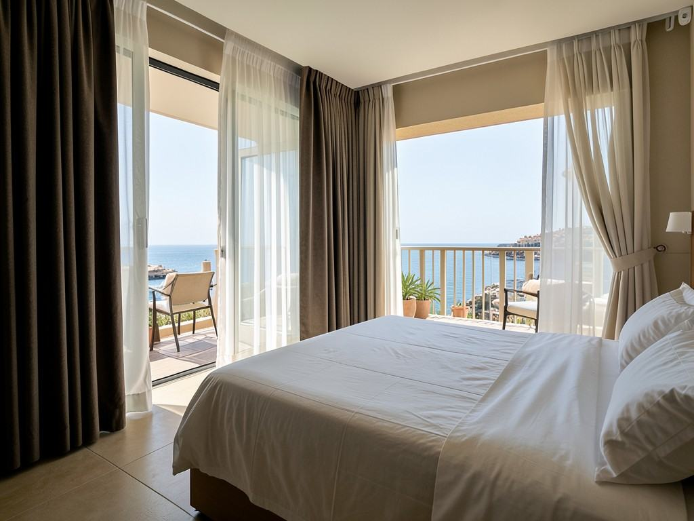
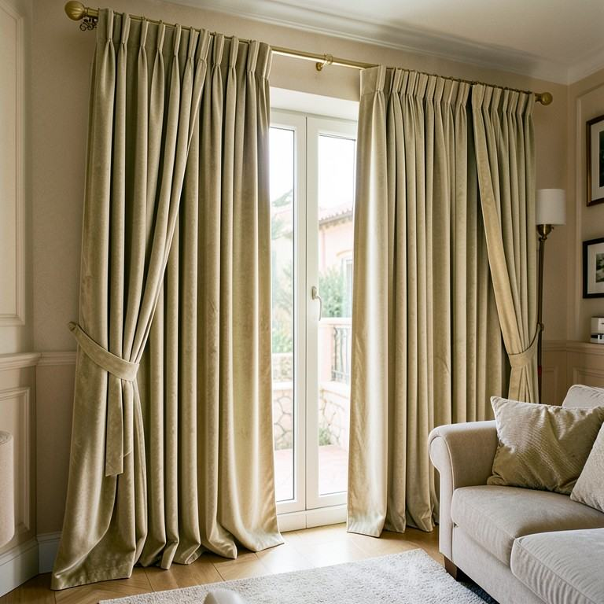
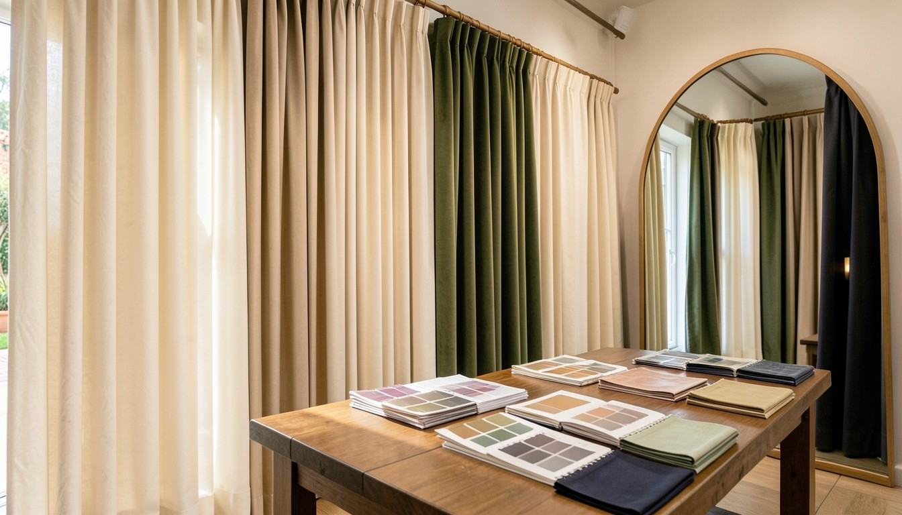
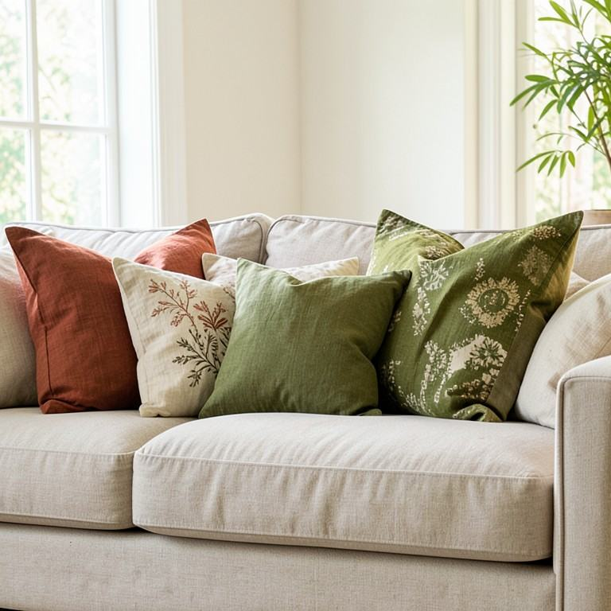
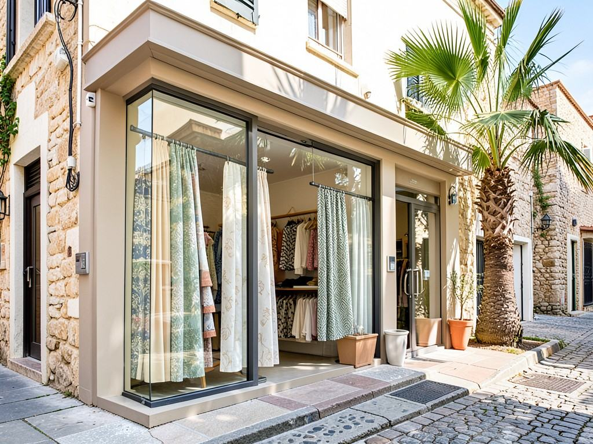

Kemer ve köylerine ücretsiz ölçü. Kendi atölyemizde dikim.
Hesaplamaya başlaPencereleri ekleyin, tahmini toplamı görün, randevuyu gönderin.



4 soru, size özel perde ve halı önerisi.

Önce / sonra ve gerçek işler.


Kodunuzla aşamayı görün.


Kalite ve şıklığın buluştuğu nokta.
“Kalite ve şıklığın buluştuğu nokta.”
NVL Home, Kemer Arslanbucak'ta ev mağazası konseptinde çalışan bir perde ve ev tekstili atölyesi. Nevale Altun yıllardır her detayına kalbini koyduğu bu işi tutkuyla yapıyor: size özel tasarlanan perde ve halılarla evleri baştan aşağı yeniden düzenliyor, kendi ürettiği ev tekstilini satıyor.
Çeyiz hazırlığında yanınızdayız; anne yadigârı dantel ve kanaviçeleri bugünün modasına uygun, kullanışlı ürünlere dönüştürüyoruz. Villa, otel ve konut projelerinde tasarımdan montaja aynı özen.
Anne yadigârı dantel, kırlente ve örtüye dönüşür.
Kırlent, masa örtüsü, perde bandı. Çeyiz hazırlığında tüm ev tekstilini birlikte planlarız.
Fotoğraf gönder

Arslanbucak Mah. Cumhuriyet Bulvarı No:111/B, Kemer · 0242 814 61 49
info@nvlhome.com · Trendyol · Hepsiburada · n11
Demo: arama ve WhatsApp düğmeleri şimdilik Dijitabela'ya gider.
360° GÖRÜNÜM
Görüntüyü fareyle ya da parmağınızla çevirin; bulunduğumuz sokağı ve girişimizi 360° gezin, gelirken zorlanmayın.
Görüntü: Google Street View · Yol tarifi al